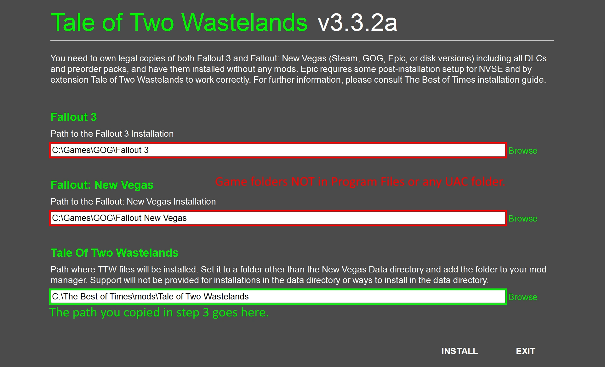

Installing Tale of Two Wastelands
In this step, we will install and activateTale of Two Wastelands through Mod Organizer 2.
Installing TTW
- Download the 3.3.2a Installer and extract the contents of the archive anywhere outside of the default Windows folders.
- Open Mod Organizer 2, select the
 button at the top and select Open Mods folder.
button at the top and select Open Mods folder.
- Here, create a folder named Tale of Two Wastelands and then copy its path.
- Close MO2.
- Back in the TTW Installer folder, right-click the TTW Install.exe and select Run As Administrator.
- In the installer, verify that the automatically set file paths for both your Fallout 3 and Fallout New Vegas installations are correct.
- Paste the path you copied in step 3 in the last text field.

- Ensure your paths look similar to the example above, then Install.
The installation might take a long time as the audio encoding section is very CPU-intensive. It takes about 40 minutes on a Ryzen 5 5600x but could take several hours or even longer on a slower CPU. It is recommended to close any other CPU-intensive application during this time to avoid slowdowns.
If you run into any errors while installing, check the FAQ to see if it has the solution.
Activating and Size Check
- Open Mod Organizer 2.
- If you installed TTW correctly, you should see the Tale of Two Wastelands mod in the left pane of MO2.
- If you do not see anything or the mod name is greyed out, you did not install TTW to the correct folder.
Find out where the files were installed to and move them to the mods folder.
The path should look like this: YOUR MOD ORGANIZER FOLDER\mods\Tale of Two Wastelands
- Click the checkbox next to it in the left pane and the right pane should fill with plugins.
- In MO2, right-click Tale of Two Wastelands and Open in Explorer.
- Right-click anywhere in the folder (do not select any file inside) and open its Properties.
- If the size of your folder does not match 15.7GB, reinstall the Tale of Two Wastelands. This can be done by first clearing the contents of the current folder, then repeating the installation steps.